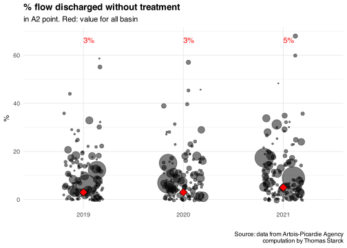

This pages describes the source used ot estimate the share of nutrients in sewers networks directly discharged to the environment, before even reaching the downstream wastewater treatment plant.
Code
knitr::opts_chunk$set(warning=F, message=F, results=F, fig.align ="center", dev='svg')library(tidyverse) #loads multiple packages (see https://tidyverse.tidyverse.org/)#core tidyverse packages loaded:# ggplot2, for data visualisation. https://ggplot2.tidyverse.org/# dplyr, for data manipulation. https://dplyr.tidyverse.org/# tidyr, for data tidying. https://tidyr.tidyverse.org/# readr, for data import. https://readr.tidyverse.org/# purrr, for functional programming. https://purrr.tidyverse.org/# tibble, for tibbles, a modern re-imagining of data frames. https://tibble.tidyverse.org/# stringr, for strings. https://stringr.tidyverse.org/# forcats, for factors. https://forcats.tidyverse.org/# lubridate, for date/times. https://lubridate.tidyverse.org/#also loads the following packages (less frequently used):# Working with specific types of vectors:# hms, for times. https://hms.tidyverse.org/# Importing other types of data:# feather, for sharing with Python and other languages. https://github.com/wesm/feather# haven, for SPSS, SAS and Stata files. https://haven.tidyverse.org/# httr, for web apis. https://httr.r-lib.org/# jsonlite for JSON. https://arxiv.org/abs/1403.2805# readxl, for .xls and .xlsx files. https://readxl.tidyverse.org/# rvest, for web scraping. https://rvest.tidyverse.org/# xml2, for XML. https://xml2.r-lib.org/# Modelling# modelr, for modelling within a pipeline. https://modelr.tidyverse.org/# broom, for turning models into tidy data. https://broom.tidymodels.org/#load additional relevant packageslibrary(readxl)#setting graphs themetheme_set(theme_minimal() +theme(plot.title =element_text(face="bold") ) )#setting viridis theme for colorsscale_colour_continuous <- scale_colour_viridis_cscale_colour_discrete <- scale_colour_viridis_dscale_colour_binned <- scale_colour_viridis_b#setting viridis theme for fillscale_fill_continuous <- scale_fill_viridis_cscale_fill_discrete <- scale_fill_viridis_dscale_fill_binned <- scale_fill_viridis_b
For Artois-Picardie, Rhin-Meuse, Seine-Normandie and Loire-Bretagne basins, we have some estimations made in their experts assessments Etat des lieux reports.
For Artois-Picardie and Rhin-Meuse, some data was also provided about direct discharge flows, for the largest wastewater treatment plants. However this only concerns water volumes and not pollutant flows As discharges tend to have lower concentrations (because of dilution during storms), these should be seen as upper bounds.
For Loire-Bretagne and Adour-Garonne, we have data about direct discharge for the largest wastewater treatment plants, downloaded from the basins webpages (see in the tab WWTP flows preparation). Contrary to Artois Picardie and Rhin-Meuse, these relate to pollutant flows, and not water volumes. The analyses are made on Loire-Bretagne’s and Adour-Garonne’s respective WWTP flows preparation pages, and are not reproduced here. We only report the results from these pages.
Rhône-Méditerranée is the only basin for which we do not have any data related to direct discharges. For this basin we use the estimations made for Adour-Garonne, which is the other basin from Southern France.
In the following we mention French regumatory points (A1, A2, A3…) related to sewers networks and wastewater treatment plants. Their definition can be seen on this page, or by clicking on the drop-down menu below. Note that these monitored points can underestimate the actual sewers discharge to the environment, as there are sewers leakage that are not monitored.
click to see French regulatory points (A1, A2…)
To summarize the regulatory points of the graph below:
A1 : discharge from the sewers (not necessarily one unique)
A2 : last discharge before the wastewater treatment plant (one unique)
A3 : flow entering the wastewater treatment plant
A4 : outgoing flow of the wastewater treatment plant, after treatment
A5 : by-pass, flow that entered the plant but which was not treated (rare)
In our analysis, we merge A1 and A2 point together and refer to them as “sewers direct discharge”. A3 is considered the flow into the WWTP, A4 the flow out. The A5 point is more unclear. When it is explicitly reported, we count it as as sewer direct discharge, because is is released without a treatment. But in some water agencies data, it is merged with the A4 point as a general WWTP “outflow”. In any case, the flows in A5 point are small, and this only slightly impacts the results.
From the data we were communicated by mail (first tab below), discharges in A1 and A2 points represent 15-20% of the flow (in volume) entering the WWTP. Concentrations of discharges during storms tend to be lower than for usual flows during dry weather, so this rate is overestimated in terms of nutrient flows; on the other hand, these monitored discharges do not account for sewers leakage, leading to underestimation.
In the Etat des lieux report (second tab below), direct discharges without WWTP treatment are generally between ~10-25% of pollution entering the sewers Contrary to the data communicated by mail, this rate considers the different concentrations and unmonitored leakage, even though the estimations remains still very rough.
We keep 20% as a final order of magnitude value: nutrient flow discharged from sewers (A1 + A2 + unmonitored leaks), as a share of the flow entering the wastewater treatment plant (A3 point).
In the graphs below we show water flows on A1 and A2 points communicated by mail. The data concerns WWTPs representing more than 5 million population equivalent, out of 6.4 million for Artois-Picardie basin, so ~80% of the basin capacity.
Discharges in A1 + A2 points represent 15-20% of the flow (in volume) entering the WWTP (A3 point). This does not take into account the different concentrations of stormwater, nor the network leaks. Concentrations of discharges tend to be lower than for usual flows; on the other hand, the unmonitored leaks probably increase the rate. We keep 15-20% as an order of magnitude for this source.
Code
#data pathpath_source <-"source_data/10_discharge_without_treatment/artois_picardie/"#read data for 2019-2021flows <-rbind(read_excel(paste0(path_source, "2019 - ratio A1 et A1, A2, A3.xlsx")),read_excel(paste0(path_source, "2020 - ratio A1 et A1, A2, A3.xlsx")), read_excel(paste0(path_source, "2021 - ratio A1 et A1, A2, A3.xlsx")) )#prepare data and compute A1 and A2 water volume as a share of A3flows <- flows %>%select(Year = Année,capacity =`Capacité STEU`,A1 =`Volume annuel A1`,A2 =`Volume annuel A2`,A3 =`Volume annuel A3` ) %>%mutate(flow = (A1 + A2 + A3),perc_discharged_A1 =round(A1/flow*100),perc_discharged_A2 =round(A1/flow*100) )#cpation of graphsSource <-"Source: data from Artois-Picardie Agency\ncomputation by Thomas Starck"
Code
#functions for graph reporting of A1 and A2 pointf_graph_reporting <-function(dataset, A_point_reported){#temporary file of reporting of A1 or A2 point, in terms of capacity (population equivalent) temp <- dataset %>%group_by(Year) %>%mutate(!!paste0(A_point_reported, "_reported") :=ifelse(is.na(!!sym(A_point_reported)) ==TRUE, "no", "yes") ) %>%group_by(Year, !!sym(paste0(A_point_reported, "_reported"))) %>%summarise(capacity =round(sum(capacity, na.rm =TRUE) /10^6, 2),flow =round(sum(flow, na.rm =TRUE) /10^6, 0) )#graph reporting gg <-ggplot(temp) +geom_area(aes(Year, capacity, fill =!!sym(paste0(A_point_reported, "_reported")), group =!!sym(paste0(A_point_reported, "_reported"))),alpha=.8 ) +labs(y="million PE", x="",subtitle ="in terms of Population Equivalent (PE)",title =paste0("reporting of the ", A_point_reported, " point in the data"),caption=Source ) +scale_y_continuous(breaks =seq(0, 7, by =1))return(gg)}
#temporary file removes empty values on A2 pointtemp <- flows %>%filter(is.na(A2)==F)#temporary file of mean value at the basin scale, by yeartemp2 <- temp %>%group_by(Year) %>%summarise(A2 =round(sum(A2, na.rm=T)/10^6), A3 =round(sum(A3, na.rm=T)/10^6),perc_discharged_A2 =round(A2/A3*100), )#scatter plot graph of %, by yearggplot(temp) +#individual pointsgeom_jitter(aes(Year, perc_discharged_A2, size = A3),alpha=.5, width = .2 ) +#mean value, in redgeom_point(data = temp2, aes(Year, perc_discharged_A2),fill="red", color="black", shape=23, size=4, ) +scale_size(range =c(0, 15)) +#men text, in redgeom_text(data = temp2, aes(Year, 65, label=paste0(perc_discharged_A2, "%")),hjust=0, vjust=0, color="red" ) +theme(legend.position="none") +labs(x="", y="%",title ="% flow discharged without treatment",subtitle ="in A2 point. Red: value for all basin",size="incoming flow",caption=Source )

Code
rm(flows, temp, temp2)
In the 2019 and 2013 Etat des lieux reports, direct discharges are generally between around ~10-25% of pollution entering the sewers We keep 20% as an order of magnitude. The experts assessment relies both on nutrient flow measures on A1 and A2 points, but also on the difference between expected discharge by people and what is actually measured at the entrance of WWTP. So the limitation previously mentioned on unmonitored leakage and concentration does not apply here, eventhough the estimation is very rough.
Pollution discharged directly by sewers networks (in pink) represents (with 0.8 uncertainty in the global flows if we count residual pollution in grey):
3.6/(21x4/4.7) = 20% of pollution produced by population (up to (3.6+0.8)/(21x4/4.7)=25% if we count residual pollution)
Pollution discharged directly by sewers networks (in pink) represents (with 0.1 uncertainty in the global flows if we count residual pollution in grey):
0.5/(2.8x4/4.7) = 20% of pollution produced by population (up to (0.5+0.11)/(2.8x4/4.7)=26% if we count residual pollution)
Pollution discharged directly by sewers networks (in pink) represents (with 4.6 uncertainty in the global flows if we count residual pollution in grey):
15/(120x4/4.7) = 15% of pollution produced by population (up to (15+4.6)/(120x4/4.7)=19% if we count residual pollution)
Document on this website page. Based on an assessment on 19 urban areas, the agency found that 10% of the pollution produced byt the population is directly discharged by storm overflows.
Pollution discharged directly by sewers networks represent
0.2/2.5 = 8% of pollution produced by population (up to (0.2+0.3)/2.5 = 20% if we count theoretical residual pollution)
Similarly to the Artois-Picardie basin (previous tab), we were communicated data on water flows in A1 and A2 points, and we have studied the Etat des lieux experts assessment report. Values are around 15-25%, we keep 20% as an order of magnitude.
For Seine-Normandie Etat des lieux, there is genarally a discrepancy concerning estimated pollution from direct discharge depending on the type of pollution considered. All expressed as % of pollution entering the WWTP:
DBO5, DCO and MES are generally around 7-15%
P is around 20-25% in 2013 and 2004
N is around 1-4% in 2013 and 2004
We are interested in N and P, which are the more extreme values. We consider that the 1% is an implausible outlier. We chose an intermediate value corresponding to DBO5, DCO and MES: 10%. That means that N direct discharge could be overestimated by a factor 2.5 and P underestimated by 2-2.5.
If we say that about half of the rainwater entering sewers is discharged without treatment, we can estimate the pollution discharged without treatment as % of the A3 point (entrance of station) by :
(109-38/2)/(760-38/2) = 12% of incoming pollution in A3
100/63 = 175% of outgoing pollution in A4
Pollution from rainwater coming in WWTP entrance represent (38/2)/760 = 2.5% of A3 point.
The data analysed on Loire-Bretagne page (in Etat des lieux -> A1, A2 and A5) results in a 15% rate for direct discharge pollution as a share of pollution entering WWTP (only monitored discharges, does not consider sewers leaks).
The Etat des lieux expert assessment gives figures of 10-15%, which is coherent.
In general, direct discharge of pollution represent 10-15% of pollution entering the station in A3 point coherent with our precedent estimation. To compute this, we first compute direct discharge as % of WWTP outflow (A4 point), then compute as % of entrance (A3 point) using WWTP removal efficiency. See computation below.
12 / 59/(1-0.8) = 4% of A3 point (see 2013 yield in 2019 report)
Direct discharge without treatment represents
17/29 = 60% of A4 point
and
17 / 29/(1-0.92) = 5% of A3 point (see 2013 yield in 2019 report)
The data analysed on Adour-Garonne webpage (in Etat des lieux -> A1, A2 and A5) results in ~7% rate for direct discharge pollution as a share of pollution entering WWTP.
We do not have data for Rhône-Méditerranée. We use the same rate as Adour-Garonne, the other French Southern basin (with the closest climate), ~7%
Synthesis
Caution, theses should be seen as orders of magnitude. The definition of losses may differ between basins (sometimes the A5 point is considered and sometimes not, sometimes unmonitored sewer losses are estimated and sometimes not…). At the national scale, the population-weigthed average is 10%.
Code
#path of the file with our estimation for each basinpath_source <-"source_data/10_discharge_without_treatment/"#load filedischarge <-read.csv(paste0(path_source, "discharge_without_treatment_estimations.csv"), ) %>%mutate(value =paste(percent_loss*100, "%"))#order by increasing %discharge$basin <-reorder(discharge$basin, discharge$percent_loss)#graphggplot(discharge) +geom_col(aes( basin, percent_loss*100, fill=basin ) ) +geom_text(aes(basin, percent_loss*100, label =paste(percent_loss*100, "%")),fontface="italic", family ="Times New Roman", hjust=0 ) +theme(strip.text.y.right =element_text(angle =0),legend.position ="none") +coord_flip() +ylim(0, 100) +labs(y="%", x="",title ="Pollution discharged without treatment as % WWTP entrance",caption="based on combination of data and expert judgements from the 6 basins" )